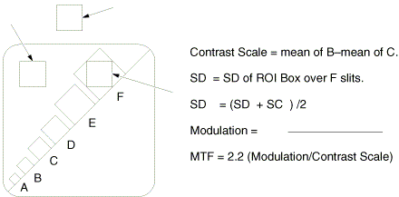
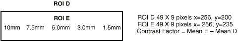

Proprietary to General Electric
Direction 5114043-800, Rev# 9
LightSpeed 3.X Service Methods (Advanced)
Proprietary to General Electric |
| Last Revised on: | November 4, 2004 |
Potential for Data Loss and/or Equipment Damage. To prevent potential
data loss, please do the following:
| |
SYSTEM HISTORY
Table 1: System History
| Where Installed: | |
| City: | State: |
| Customer's Telephone Number: | Room No.: |
| System I.D. No.: | |
| Operator's Console (Master Control): | |
| Model Number: | Serial Number: |
| System Gantry: | |
| Model Number: | Serial Number: |
| Dates of Tests: | Performed by: |
TEST EQUIPMENT HISTORY
Table 2: Test Equipment Used
| Test Equipment Used (If Applicable) | ||||
| Name | Manufacturer | Model Number | Serial Number | Calib. Due |
| HV Bleeder | ||||
| Oscilloscope | ||||
| DMM | ||||
COMPONENT TRACEABILITY
The Component Locator Installation Report has been completed and sent to the Product Locator File.
Table 3: Certified Component Changes
| Certified Component Changes | |||||
|---|---|---|---|---|---|
| Equipment | Model Number | Serial Number | Install Date | Exp. Ctr. Reading | |
| Old Tube Casing | |||||
| Old Tube Insert | |||||
| New Tube Casing | |||||
| New Tube Insert | |||||
| Old Detector | |||||
| New Detector | |||||
| Old Collimator | |||||
| New Collimator | |||||
| Old Anode Tank | |||||
| New Anode Tank | |||||
| Old Cathode Tank | |||||
| New Cathode Tank | |||||
| Inst. | Tube | P.M. |
| Det. | Col. | HV Tank |
After installing a system, or repairing or replacing one of the subsystems listed in Table 3, complete the required system tests, and fill out the corresponding portions of Form 4879. If the device name appears in the table, run the corresponding test and fill in the values. If the name is blanked, you don’t have to fill in that portion of the form.
MA METER VERIFICATION - HHS REQUIREMENT
Initials: _______________
| Inst. | ||
Table 4: mA Meter Verification (Table 1)
| Circuit ON | ||
|---|---|---|
| A/D | Range | |
| Anode mA | 15 - 25 | |
| Cathode mA | 15 - 25 | |
| DVM - A/D = Delta (Compare Delta to Limits) | ||
MA METER VERIFICATION - HHS REQUIREMENT
Initials: _______________
| Tube | P.M. | |
| HV Tank |
Table 5: mA Meter Verification (Table 2)
| Circuit OFF | Circuit ON | ||||||||
|---|---|---|---|---|---|---|---|---|---|
| DVM | A/D | Delta | Limits ± | DVM | A/D | Delta | Limits ± | ||
| Anode KV | 0.0 | * | * | 0.5 | Anode KV | 50.0 | * | * | 7.5 |
| Cathode KV | 0.0 | * | * | 0.5 | Cathode KV | 50.0 | * | * | 7.5 |
| Total KV | 0.0 | * | * | 0.5 | Total KV | 100.0 | * | * | 15.0 |
| Anode mA | 0.5 | Anode mA | 4.5 | ||||||
| Cathode mA | 0.5 | Cathode mA | 4.5 | ||||||
| DVM
- A/D = Delta Compare Delta to Limits * Ignore these values at this time. | |||||||||
NEW TUBE SEED SHIFT - HHS REQUIREMENT
Initials: _______________ □ Check box when complete
| Tube | ||
| HV Tank |
SIGNAL TO NOISE TEST (X-RAY VERIFICATION)
Initials: _______________ □ Check box when complete
| Inst. | Tube | |
| Det. | Col. | HV Tank |
TUBE Z-AXIS ALIGNMENT (FORMERLY TUBE PLANE OF ROTATION (POR))
□ Check box when complete
| Inst. | Tube | |
| Det. | Col. |
Z-Align Used: Adjusted In Specification. (Go to Detector Z-Axis, step A),
-OR-
Tube Plane of Rotation (POR) using Film. XF - XR = 1.8mm ±0.3mm
BEAM ON WINDOW
□ Check box when complete
| Inst. | Tube | |
| Det. | Col. |
If you used Z-Align (Future) for the Z-Axis Alignment, no additional adjustment is necessary
-OR-
Run BOW on a cold tube. If you have to check BOW after completing the system alignments, let at least three hours elapse from the last scan, to let the tube completely cool.
The channel should equal -1.5mm ±0.25mm on initial checks.
The channel should equal -1.5mm ±0.50mm on verification checks.
This program computes the position of the detector in three places: Right, Center and Left
Record the displayed position values in the Table 6:.
Table 6: Beam On Window
| Right/Low | Center/Medium | Left/High |
|---|---|---|
ISOCENTER
□ Check box when complete
| Inst. | Tube | |
| Det. | Col. |
Average of Large and Small Focal Spots. Spec: 389.75 ±0.02 channels
CENTER BODY FILTER (CBF)
□ Check box when complete
| Inst. | ||
| Det. | Col. |
Adjust CBF Value. Spec: Target Value ±0.2 channels
COLLIMATOR APERTURE CHECK - HHS REQUIREMENT
Initials: _______________ □ Check box when complete
| Inst. | ||
| Col. |
Table 7: Collimator Aperture Check
| Aperture | Center | Spec - Center only |
|---|---|---|
| Small | 3.783 ±5% | |
| Large | 5.9 ±5% |
VERIFICATION OF HV TANK FEEDBACK RESISTORS - HHS REQUIREMENT
(Formerly Calibration of HV Tank Feedback Resistors)
Initials: _______________
| Tube | P.M. | |
| HV Tank |
Use KV Test (Only if KV test baseline available) and fill in the chart: Verification of total kV.
Table 8: KV Test
| Nominal kV | Expected | Measured | % Deviation ±1% | |
|---|---|---|---|---|
| 100 | ||||
-OR-
Use the HV Divider and Oscilloscope
ANODE AND CATHODE
Table 9: Anode Test
| Technique | Anode Divider | Displayed Anode KV | Delta KV | Limits ± KV |
|---|---|---|---|---|
| 100/50L | 0.5 |
Table 10: Cathode Test
| Technique | Cathode Divider | Displayed Cathode KV | Delta KV | Limits ± KV |
|---|---|---|---|---|
| 100/50L | 0.5 |
Anode Divider - Displayed Anode = delta KV
Cathode Divider - Displayed Cathode = delta KV
Compare delta KVs to limits. Anode and Cathode computer displayed readings have a limit of 50.0 ± 0.5 KV.
TOTAL KV
Table 11: Cathode & Anode Test
| Technique | Cathode and Anode Divider | Displayed Total KV | Delta KV | Limits ± KV |
|---|---|---|---|---|
| 100/50L | 1.5 |
(Cathode & Anode Divider) - Displayed Total KV = delta KV, Compare delta kV to limits
KV METER VERIFICATION
Table 12: KV Meter Verification
| Circuit OFF | Circuit ON | ||||||||
|---|---|---|---|---|---|---|---|---|---|
| DVM | A/D | Delta | Limits ± | DVM | A/D | Delta | Limits ± | ||
| Anode KV | 0.0 | 0.5 | Anode KV | 50.0 | 7.5 | ||||
| Cathode KV | 0.0 | 0.5 | Cathode KV | 50.0 | 7.5 | ||||
| Total KV | 0.0 | 0.5 | Total KV | 100.0 | 15.0 | ||||
| Anode mA | * | * | * | 0.5 | Anode mA | * | * | * | 4.5 |
| Cathode mA | * | * | * | 0.5 | Cathode mA | * | * | * | 4.5 |
| * Ignore these values at this time. | |||||||||
DVM - A/D = Delta, Compare Delta to Limits.
AUTO MA CAL
□ Check box when complete
| Inst. | Tube | P.M. |
| HV Tank |
The MX200 tube uses a metal/ceramic frame, which means some electrons hit the target and actually bounce off, and are then captured by the frame. This causes a frame current, which results in an anode mA measurement of slightly less than the cathode mA, typically 5 to 10% less. Because the cathode mA is the true indicator of radiation output, the CT system controls cathode mA rather than anode mA.
KV AND MA VERIFICATION DATA SHEET HHS REQUIREMENT
Initials: _______________
| Tube | P.M. | |
| HV Tank |
Data sheet complete and meets specification (attach print out/film from system if available).
Table 13: Small Focal Spot Technique
| SMALL FOCAL SPOT TECHNIQUE | |||||||||||
|---|---|---|---|---|---|---|---|---|---|---|---|
| At 5ms | Spec Limits | Cathode | Anode | Spec Limits for | |||||||
| KV | mA | KV | mA | for mA at 5ms | KV | mA | KV | mA | Total KV | Total KV | Cathode mA |
| 80 | 40 | 34-44 | 78.4-81.6 | 36.2-43.8 | |||||||
| 70 | 59-77 | 78.4-81.6 | 65.6-74.4 | ||||||||
| 100 | 85-110 | 78.4-81.6 | 95.0-105 | ||||||||
| 150 | 128-165 | 78.4-81.6 | 144-156 | ||||||||
| 200 | 170-220 | 78.4-81.6 | 193-207 | ||||||||
| 300 | 255-330 | 78.4-81.6 | 291-309 | ||||||||
| 100 | 40 | 34-44 | 98-102 | 36.2-43.8 | |||||||
| 70 | 59-77 | 98-102 | 65.6-74.4 | ||||||||
| 100 | 85-110 | 98-102 | 95.0-105 | ||||||||
| 150 | 128-165 | 98-102 | 144-156 | ||||||||
| 200 | 170-220 | 98-102 | 193-207 | ||||||||
| 240 | 204-264 | 98-102 | 232.2-247.8 | ||||||||
| 120 | 40 | 34-44 | 117.6-122.4 | 36.2-43.8 | |||||||
| 70 | 59-77 | 117.6-122.4 | 65.6-74.4 | ||||||||
| 100 | 85-110 | 117.6-122.4 | 95.0-105 | ||||||||
| 150 | 128-165 | 117.6-122.4 | 114-156 | ||||||||
| 200 | 170-220 | 117.6-122.4 | 193-207 | ||||||||
| 140 | 40 | 34-44 | 137.2-142.8 | 36.2-43.8 | |||||||
| 70 | 59-77 | 137.2-142.8 | 65.6-74.4 | ||||||||
| 100 | 85-110 | 137.2-142.8 | 95.0-105 | ||||||||
| 130 | 110-143 | 137.2-142.8 | 124.4-135.6 | ||||||||
| 170 | 144-187 | 137.2-142.8 | 163.6-176.4 | ||||||||
KV AND MA VERIFICATION DATA SHEET HHS REQUIREMENT
Initials: _______________
| Tube | P.M. | |
| HV Tank |
Data sheet complete and meets specification (attach print out/film from system if available).
Table 14: Large Focal Spot Technique
| LARGE FOCAL SPOT TECHNIQUE | |||||||||||
|---|---|---|---|---|---|---|---|---|---|---|---|
| At 5ms | Spec Limits | Cathode | Anode | Spec Limits for | |||||||
| KV | mA | KV | mA | for mA at 5ms | KV | mA | KV | mA | Total KV | Total KV | Cathode mA |
| 80 | 40 | 34-44 | 78.4-81.6 | 36.2-43.8 | |||||||
| 70 | 59-77 | 78.4-81.6 | 65.6-74.4 | ||||||||
| 100 | 85-110 | 78.4-81.6 | 95.0-105 | ||||||||
| 200 | 170-220 | 78.4-81.6 | 193-207 | ||||||||
| 300 | 255-330 | 78.4-81.6 | 291-309 | ||||||||
| 400 | 340-440 | 78.4-81.6 | 389-411 | ||||||||
| 100 | 40 | 34-44 | 98-102 | 36.2-43.8 | |||||||
| 70 | 59-77 | 98-102 | 65.6-74.4 | ||||||||
| 100 | 85-110 | 98-102 | 95.0-105 | ||||||||
| 200 | 170-220 | 98-102 | 193-207 | ||||||||
| 300 | 255-330 | 98-102 | 291-309 | ||||||||
| 420 | 357-462 | 98-102 | 408-432 | ||||||||
| 120 | 40 | 34-44 | 117.6-122.4 | 36.2-43.8 | |||||||
| 70 | 59-77 | 117.6-122.4 | 65.6-74.4 | ||||||||
| 100 | 85-110 | 117.6-122.4 | 95.0-105 | ||||||||
| 200 | 170-220 | 117.6-122.4 | 193-207 | ||||||||
| 300 | 255-330 | 117.6-122.4 | 291-309 | ||||||||
| 400 | 340-440 | 117.6-122.4 | 389-411 | ||||||||
| 140 | 40 | 34-44 | 137.2-142.8 | 36.2-43.8 | |||||||
| 70 | 59-77 | 137.2-142.8 | 65.6-74.4 | ||||||||
| 100 | 85-110 | 137.2-142.8 | 95.0-105 | ||||||||
| 200 | 170-220 | 137.2-142.8 | 193-207 | ||||||||
| 300 | 255-330 | 137.2-142.8 | 291-309 | ||||||||
| 340 | 289-374 | 137.2-142.8 | 330.2-349.8 | ||||||||
RISE AND FALL TIMES - HHS REQUIREMENT
Initials: _______________
| P.M. | ||
Table 15: Rise and Fall Times
| Technique | |||||
|---|---|---|---|---|---|
| KV | mA | Rise Delay ms | Limit | Fall Delay ms | Limit |
| 80 | 400 | 0 +1.9ms | Not Applicable | ||
| 140 | 40 | Not Applicable | 0 +2ms | ||
VERIFICATION OF INTERNAL SCAN TIMER - HHS REQUIREMENT
Initials: _______________
| P.M. | ||
Table 16: Verification of Internal Scan Timer
| Technique | |||||
|---|---|---|---|---|---|
| KV | mA | Oscilloscope Exposure Duration | Limit | Displayed Exposure Duration | Limit |
| 100 | 40 | 0.96-1.04 sec | 0.99-1.02 sec | ||
EXPOSURE TIME ACCURACY - HHS REQUIREMENT
Initials: _______________
| P.M. | ||
SCOUT SCANS
Table 17: Scout Scans
| Technique Distance | Displayed Exposure Duration | Limit | |
|---|---|---|---|
| 50 mm | 0.56 - 0.60 | ||
| 150 mm | 1.52 - 1.64 | ||
| 600 mm | 5.84 - 6.32 | ||
AXIAL SCANS
Table 18: Axial Scans
| Technique Time | Displayed Exposure Duration | Limit | |
|---|---|---|---|
| 0.8 or fastest scan | 0.768 - 0.832 | ||
| 1.0 | 0.960 - 1.04 | ||
| 2.0 | 1.92 - 2.08 | ||
HELICAL SCAN
Table 19: Helical Scans
| Technique Duration | Displayed Exposure Duration | Limit | |
|---|---|---|---|
| 30.1 sec (5 mm image, 15 mm HQ mode) | 28.9 - 31.3 | ||
OPERATOR INDICATORS - HHS REQUIREMENT
Initials: _______________
| Inst. | P.M. | |
X-Ray Indicators on Front and Back of Gantry Illuminate During X-Ray
X-RAY BEAM LOCATION - HHS REQUIREMENT
Initials: _______________
| Inst. | P.M. | |
TOMO PLANE INDICATION ACCURACY
Verify that the relationship of the alignment lights to the x-ray beam meets compliance.
Internal Lights (1mm)
External Lights (1mm)
All alignment lights remain visible with room lights at maximum settings.
IMAGE CALIBRATION
□ Check box when complete
| Inst. | Tube | |
| Det. | Col. | HV Tank |
Detailed Calibrations completed and CT N Number adjustment completed. The Number of Phantom Cals vary with site-specific scanning protocols.
IMAGE QUALITY CHECK - HHS REQUIREMENT
Initials: _______________
| Inst. | Tube | |
| Det. | Col. | HV Tank |
48CM POLY PHANTOM
48cm/L Scan parameters: 5mm (4i)/ 340mA /1 sec/16 Images
Table 20: 48cm Poly Phantom (4/8 Slice Systems)
| Exam/Series/Image | AvXc | AvXo | AvXo - AvXc | AvSDo | Comments | Scan Tech Signature/Date |
|---|---|---|---|---|---|---|
| _______/_______/ 1, 5, 9, 13 | ||||||
| 2, 6, 10, 14 | ||||||
| 3, 7, 11, 15 | ||||||
| 4, 8, 12, 16 | ||||||
| SPECS | - - - | - - - | ±8.5 | <70.0 | - - - | - - - |
*If your AvSDo fails, check to make sure you did not scan this technique at 1mm.
Box Size: 45 x 45 pixels
Center Coordinates: 256, 256
Outside Coordinates: 256, 60; 452, 256; 256, 452; 60, 256
Image Acceptance/Date: _______________
Certified Image Reviewer: _______________
ARTIFACT LIMITS:
Table 21: Artifact Limits
| Rings: | Smudge: |
| 48/L; 30 to 36 counts | 48/L; 6.8 counts |
| 1.25mm | 1.25mm; 12.0 counts |
| Band: | Streaks: |
| 8.0 counts | 4.0 counts |
| Band Radius: | Center Artifact: |
| 0 to 23.5cm | N/A |
| Clump: | Center Artifact: |
| 48/L; 3.0 SIGMA | 1.25mm; 14.0 counts |
| 1.25mm; N/A | |
| Center Spot: N/A |
IMAGE QUALITY CHECK - HHS REQUIREMENT
Initials: _______________
| Inst. | Tube | |
| Det. | Col. | HV Tank |
20CM QA#1 PHANTOM
QA#1 scan parameters: S/10mm (2i)/120kV/260mA/1 sec/4 images. Use this scan data for Bone Retro. Record data on Form 4879.
Table 22: QA#1 Data (Prospective Images)
| Exam/Series/Image | MTF | MTF 2 slice avg. | Contrast Scale | Comments/Artifacts | Scan Tech Signature/Date |
|---|---|---|---|---|---|
| ____/____ /1 | MTF1 + MTF3 ÷ 2 = | ||||
| 3 | |||||
| 2 | MTF2 + MTF4 ÷ 2 = | ||||
| 4 | |||||
| SPECS | - - - | 0.65 to 1.0 | 110.0 to 130.0 | - - - | - - - |
QA#1 scan parameters: S/10mm (2i)/120KV/260mA/1 sec/4 images Bone Retro/Display FOV = 15cm Record data on Form 4879
Table 23: QA#1 Data (Retrospective Images)
| Exam/Series/Image | Line Patterns Visible | Comments/Artifacts | Scan Tech Signature/Date |
|---|---|---|---|
| _____/_____/1 | |||
| 2 | |||
| 3 | |||
| 4 | |||
| SPECS | B, C, D, E, F | - - - | - - - |
Box Size: 17 x 17 pixels
Illustration 1: QA#1 Phantom Measurements

IMAGE QUALITY CHECK - HHS REQUIREMENT
Initials: _______________
| Inst. | Tube | |
| Det. | Col. | HV Tank |
20CM QA#2 PHANTOM
QA#2 scan parameters: S/10mm (2i)/120KV/260mA/1 sec/Peristaltic OFF
Scan from S40.0 to S50.0 - Record results on Form 4879
Table 24: QA#2 Data (Part 1)
| Exam/Series/Image at location S40.0 | Visible Hole View w/ Window 20 | Contrast Factor | Comments/Artifacts | Scan Tech Signature/Date |
|---|---|---|---|---|
| _____/_____/1 | ||||
| 3 | ||||
| 5 | ||||
| 7 | ||||
| SPECS | See Table 25 | 2.0 to 12.0 | - - - | - - - |
Box size: 49 x 9 pixels
Table 25: QA#2 Data (Part 2)
| Contrast Factor | Visible Number of Holes: Lower Limit* | Visible Number of Holes: Upper Limit* | Smallest Visible Hole: Size |
|---|---|---|---|
| 2.00 to 3.99 | 2 | 5 | 7.5mm |
| 4.00 to 7.99 | 3 | 5 | 5.0mm |
| 8.00 to 12.00 | 4 | 5 | 3.0mm |
*Required number of visible holes depends on the contrast factor.
2 out of the 4 scans taken must meet this specification.
Image Acceptance/Date: _______________
Certified Image Reviewer: _______________
FOR REFERENCE ONLY:
Use the manual method for calculating Contrast Factor.
(Only when you cannot access Tool QA#2.)
Illustration 2: Contrast Factor Calculation

IMAGE QUALITY CHECK - HHS REQUIREMENT
Initials: _______________
| Inst. | Tube | |
| Det. | Col. | HV Tank |
20CM QA#3 PHANTOM
QA#3 scan parameters: S/10mm 2i/120KV/260mA/1 sec/8 Images
Scan from S55.0 to S65.0
Record data on Form 4879.
Table 26: QA#3 Data
| Exam/Series/Image | AVXc 4 scan avg. | Std Dev 4 scan avg. | AvXo - AvXc | Comments/Artifacts | Scan Tech Signature/Date |
|---|---|---|---|---|---|
| ____/____ / 1,3,5,7 | |||||
| 2,4,6,8 | |||||
| SPECS | 0 ±3.0 | 2.6 to 3.4 | ±3.0 | - - - | - - - |
| NOTE: | The average value of each row in Table 26 must meet the specifications technique listed at the bottom of the corresponding column. |
Box Size: 31 x 31 pixels at Coordinate (256, 256)
Center Coordinates: (256, 256)
Outside Coordinates: (256, 95), (417, 257), (256, 417), (95, 256)
Visually Inspect images for rings and bands
Visual results acceptable? Yes: □
Artifact Limits:
Rings: 4.0/4.8 cts
Band: 2.8 cts
Band Radius: 0-8.5 cm
Clump: N/A
Center Spot: N/A
Center Artifact: 3.5 Std. Dev.
Smudge: 2.2 counts 1mm; 4.0 counts
Streaks: 4.0 cts
Image Acceptance/Date: _______________
Certified Image Reviewer: _______________
UNUSUAL ALIASING, OTHER ARTIFACTS
| Inst. | Tube | |
| Det. | Col. | HV Tank |
Illustration 3: Artifacts Check

Visual inspection for unusual aliasing, and other artifacts. Visual results acceptable? Yes: □
CT NUMBER CHECK
| Inst. | Tube | |
| Det. | Col. | HV Tank |
All CT N numbers for all calibrated techniques fall within 0 ±1.5 HU. All Values 0±1.5 HU? Yes: □
HEAT SOAK/SEASONING
□ Check box when complete
| Inst. | Tube | |
COLLIMATOR CHANGE
Required test data - Z axis detector alignment Polaroid
Immediately submit Form 2579